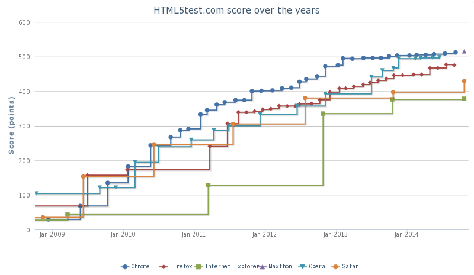
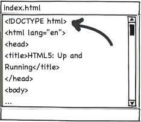
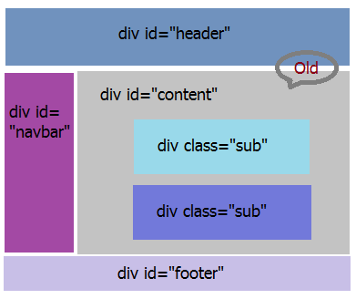
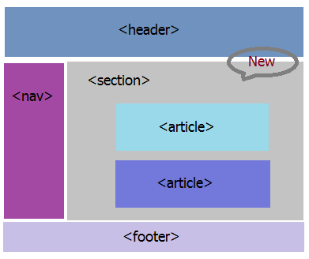
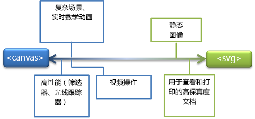
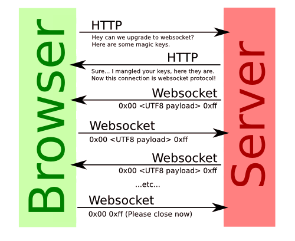
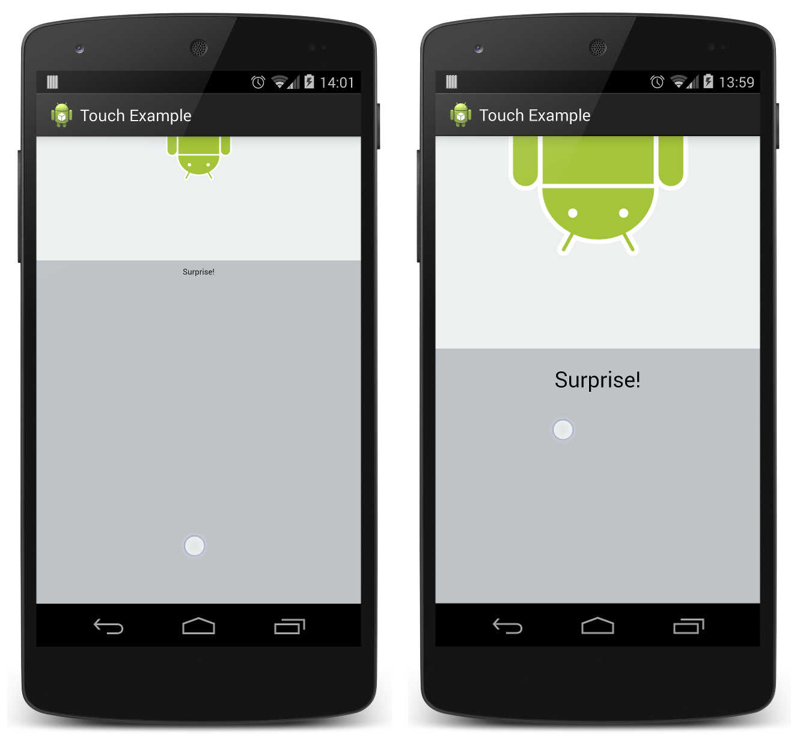

W3C(World Wide Web Consortium)WHATWG(Web Hypertext Application Technology Working Group)
正在进行，却已经应用
现代浏览器必备技能


2008年1月22日
HTML5 A vocabulary and associated APIs for HTML and XHTML W3C Proposed Recommendation 16 September 2014

It’s not one big thing!
It’s easy to get started

 

Web Storage
Web Workers
Web Socket 
Offline Application
